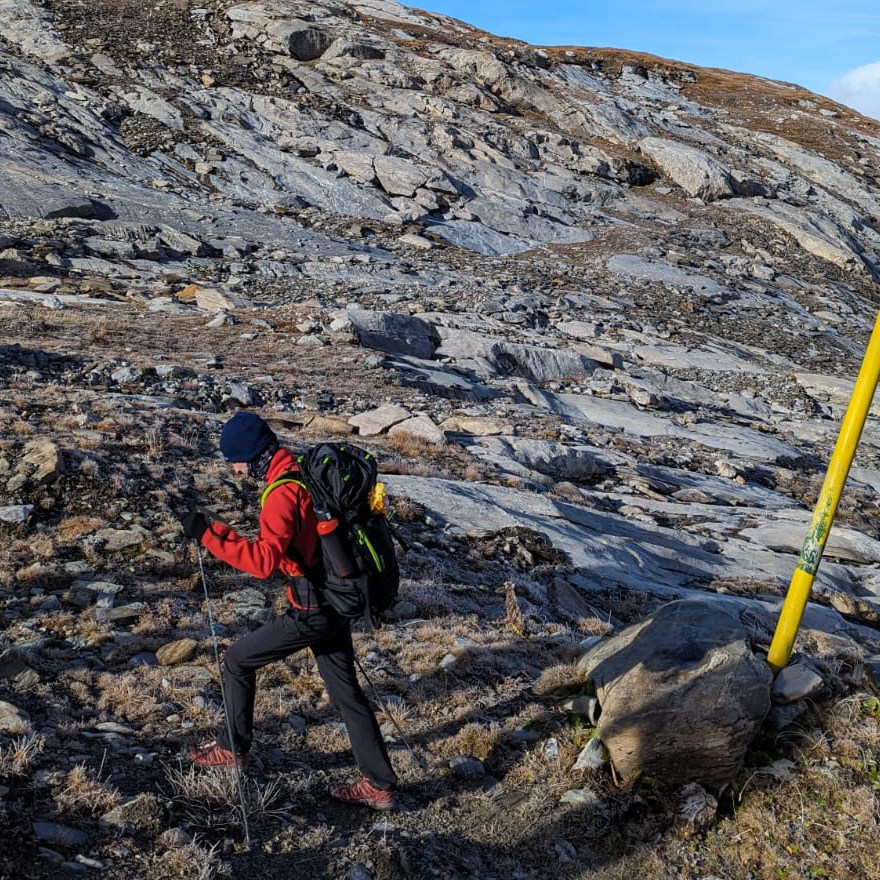

Je suis en première année de thèse au Laboratoire de Mathématiques de Chambéry de l’Université Savoie Mont Blanc sous la direction de Michel Raibaut. Mon projet de thèse s’intitule « Analyse microlocale non archimédienne ».
J’étais anciennement normalien à l’École normale supérieure de Rennes, dans le département de mathématiques, de 2019 à 2023. J’ai obtenu l’agrégation externe de mathématiques en 2022.
Ici, vous pourrez trouver :
- des documents liés à mes missions d’enseignement à l’USMB ;
- mes futurs travaux de recherche effectués pendant ma thèse ;
- différentes notes de cours dispensés à l’ENS ou à l’Université de Rennes 1 ;
- les mémoires et exposés que j’ai écrits ;
- des documents liés à l’agrégation comme mes leçons et développements ;
- d’autres ressources produites par des camarades de promo.
Comment me trouver ?
Bureau 20
Laboratoire de mathématiques (UMR 5127)
Université Savoie Mont Blanc
Bâtiment 21 (Chablais)
Campus scientifique
73376 Le Bourget-du-Lac
Laboratoire de mathématiques (UMR 5127)
Université Savoie Mont Blanc
Bâtiment 21 (Chablais)
Campus scientifique
73376 Le Bourget-du-Lac

— lundi 6 novembre 2023 — Mentions légales